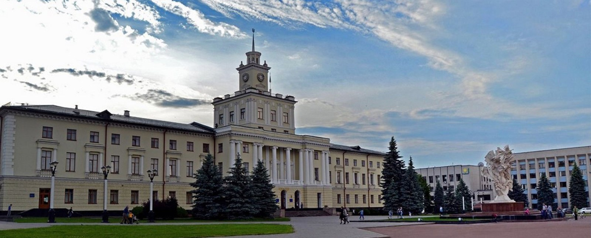

Хмельнпицький-моє місто!
Дата заснування міста не відома, та перші згадки відносяться до першої половини XV століття та пов’язані з правлінням польського короля Владислава ІІ Ягайла. Серед населених пунктів що згадуються у документах знаходимо сільське населення під назвою Ploskir о wcze (Плоскирівці) та відповідний до цього запис: 10 лютого 1431 року у місті Сопоті король Владислав ІІ Ягайло записує Янові Чанстуловському 100 гривень на володіння ”селами Голисин (нині село Олешин Хмельницького району) та Плоскирівці на річці Південний Буг у Летичівському повіті Подільської землі”
У роки правління наступного короля Владислава ІІІ – знаходимо нову назву поселення Ploskirоw – Плоскирів. Під час Визвольної війни у часи гетьманства Богдана Хмельницького Плоскирів та його околиці неодноразово опинялися у центрі воєнних дій та переходило із рук в руки ворогуючих сторін. Після закінчення битв Плоскирів повернувся у руки польського володіння. 5 липня 1795 була утворена Подільська губернія у складі Російської імперії і один з її повітів став називатися Проскурівським із центром у місті Проскурові. Саме у цьому указі вперше з'являється назва Проскурів. Коли на Поділлі та в місті остаточно встановлена радянська влада 15 березня 1941 місто стало центром Кам'янець-Подільської області; 16 січня 1954 — центр Хмельницької області, перейменоване на Хмельницький на честь гетьмана Богдана Хмельницького